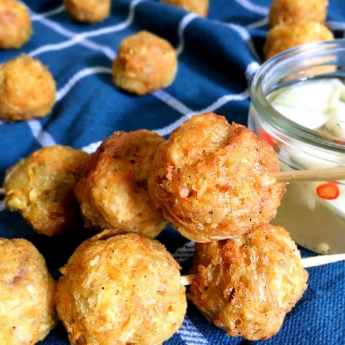

Cassava Balls

Cassava balls is a Filipino street food that I vaguely remember. It all just came back to me when I was making cassava cake a few days ago. If my memory serves me right, this savory food is an alternative for fish balls. The street vendor near us will make this if he was not able to get supplies of fish balls. So to make things short, I called my brother back home in the Philippines and ask if he remembers the ingredients.
Guess what? He does! And here is my take on it.
Ingredients
- 1 ½ cup cassava (grated)
- 1 carrot (grated)
- 1 onion (finely chopped)
- 2 tbsp green onion (finely chopped)
- cup flour
- 2 cups cooking oil (for frying)
- tsp salt
- tsp pepper
- 1 egg
Instruction
- In a bowl. Mix grated cassava, carrot, onion, green onions, flour, salt, pepper and egg. Mix well and rest for 30 minutes.
- Heat oil in a deep frying pan over high heat. Scoop ½ tbsp of the cassava mixture and roll into a ball with the palm of your hands. Deep fry the cassava balls until golden brown. Repeat the process until you finish the cassava mixture.
- Transfer in a plate with kitchen paper towel to absorb excess oil. Serve with vinegar dipping sauce. Bon Appetit!
- Make the batter by combining the grated cassava, butter, 1/2 cup condensed milk, 1/2 cup evaporated milk, 6 tablespoons cheddar cheese, 14 tablespoons sugar, and 2 eggs in a mixing bowl and mix thoroughly.